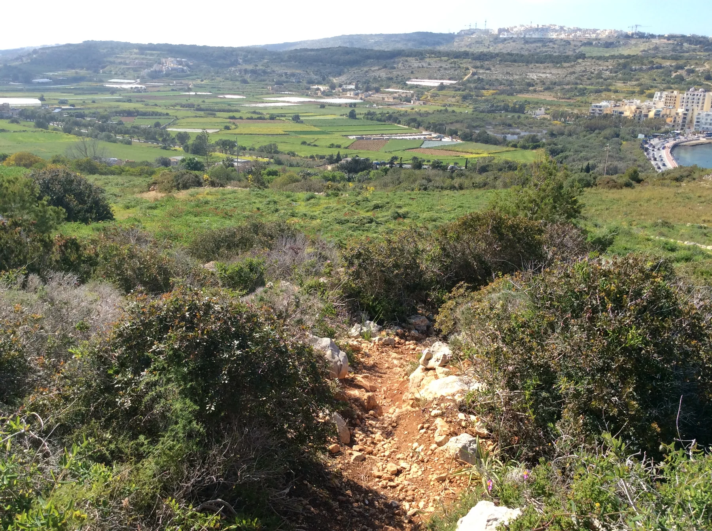

The inventory shows a locality centroid, not the building. It cannot establish a waterfront position, view, entrance, nearest stop or access from the bay road.

IX-XEMXIJA · SAN PAWL IL-BAĦARBay below.
Bay below.
Ridge above.
Xemxija sits where a coastal road, steep residential streets, fields and protected wetland meet. The locality name is only the start: confirm the street and level before planning a viewing.
READ THE TERRAIN
One label, several approaches.
Waterfront frontage, hillside streets, the Pwales edge and the heritage ridge do not work the same way. A locality centre cannot tell you the gradient, pavement, entrance level, parking arrangement or real route to a home.
Hillside streets and the bay edge can involve very different gradients. Inspect the permitted route instead of assuming a short map distance is an easy walk.
The reserve is a managed protected wetland with current access rules. It is not shorthand for the character or access of every Xemxija address.
Is-Simar, carefully bounded.
ERA identifies Is-Simar as a protected Ramsar and Natura 2000 wetland. BirdLife Malta manages the reserve and publishes live visitor information. Check its current page for seasonal access, rules and any changes before travelling.
BirdLife Malta — Simar Nature Reserve ↗A trail is not a shortcut.
ERA records the Bajda Ridge heritage context, including ancient-road, tomb, cart-rut, quarry and old-beehive features. This terrain-based trail must never be substituted for an address-level walking route.
ERA — Xemxija designation context ↗EVERYDAY CHECKS
Plan the practical visit first.
These public and operator pages help structure a viewing day. They are not rankings and do not prove which service is nearest to a listed home. Recheck live status, hours, stops and the permitted route before travelling.
Mosta Health Centre
Primary HealthCare currently includes Xemxija in the centre's catchment. This is a service-area statement, not a journey-time estimate.
Primary HealthCare ↗Xemxija and Roti
Current Malta Public Transport pages show service at these named stops. Routes and departure times remain on the live timetable.
Route X299 ↗Route TD1
The operator currently lists Ix-Xemxija on TD1. That does not create a fixed airport time or prove the best stop for a particular address.
Current TD1 timetable ↗Verify on the street.
No specific grocery operator has yet cleared the source standard for this edition. Confirm today's options and the actual route during the viewing.
FOOD WITHOUT A RANKING
Current licence records, not “best of”.
The Malta Tourism Authority's live restaurant register identifies establishments on Telgħet ix-Xemxija. Licence records establish names and registered addresses; they do not establish menus, prices, opening hours, quality, views or proximity to a home.
Xemxija Cafe Lounge
A current licensed restaurant record at 1, Telgħet ix-Xemxija. Check the live register and operator channel before visiting.
MTA licensed-establishment register ↗Shaukiwan Restaurant
A second current licensed restaurant record on Telgħet ix-Xemxija. It appears here as a sourced example, not an endorsement.
MTA licensed-establishment register ↗The heritage trail is not a walking estimate.
This guide draws no route. A line from the locality centre to the ridge, reserve, bus stop or bay would ignore gradients, access points and street conditions. Any future itinerary must identify its real endpoints, use verified geometry and keep walking, bus, driving and taxi data separate.
Open the bay-and-ridge overview only when needed.
The map frames Xemxija and surrounding place labels for orientation. It deliberately draws no locality or protected-area boundary, property pin, route, straight line, distance or travel time and loads from OpenStreetMap only after your click.
Address Registrar · ERA — Ramsar sites · ERA — protected areas · BirdLife Malta — Is-Simar · ERA — Xemxija designation context · Primary HealthCare · Malta Public Transport X299 · Malta Public Transport TD1 · MTA licensed restaurants
Neighbourhood edition. No ranking, fixed opening hour, menu, property-specific distance, guaranteed view, parking claim, accessibility promise, grocery proximity or journey time is implied.